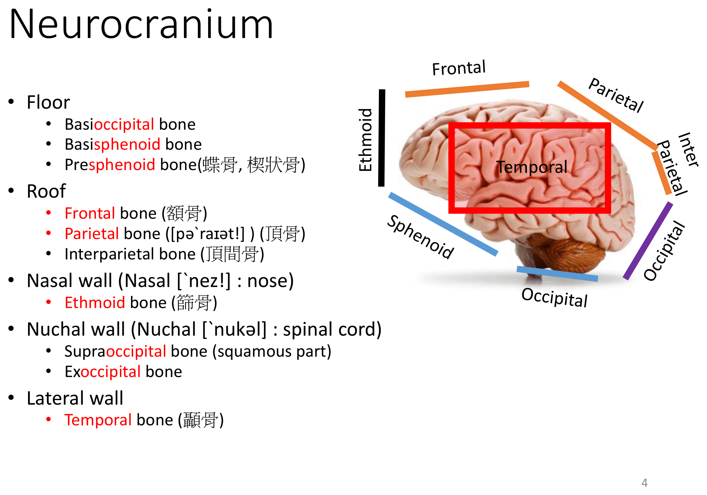
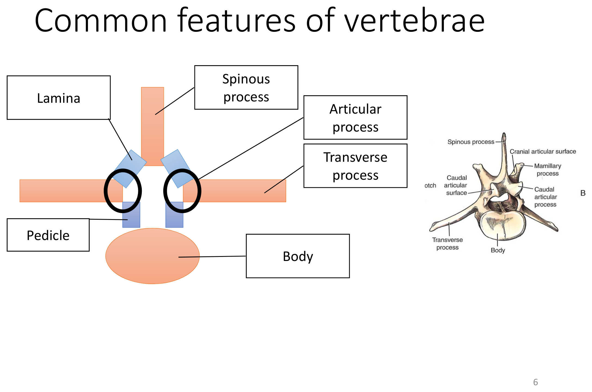
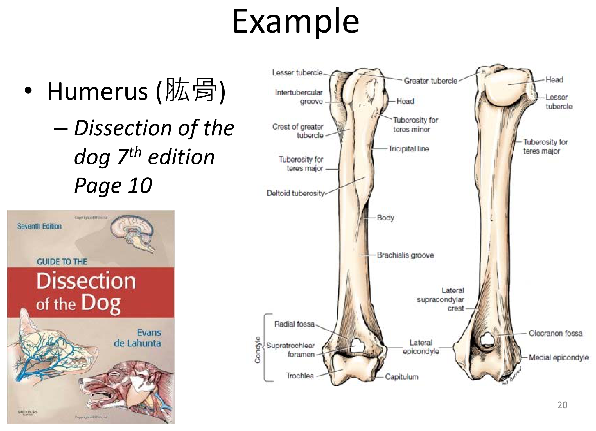
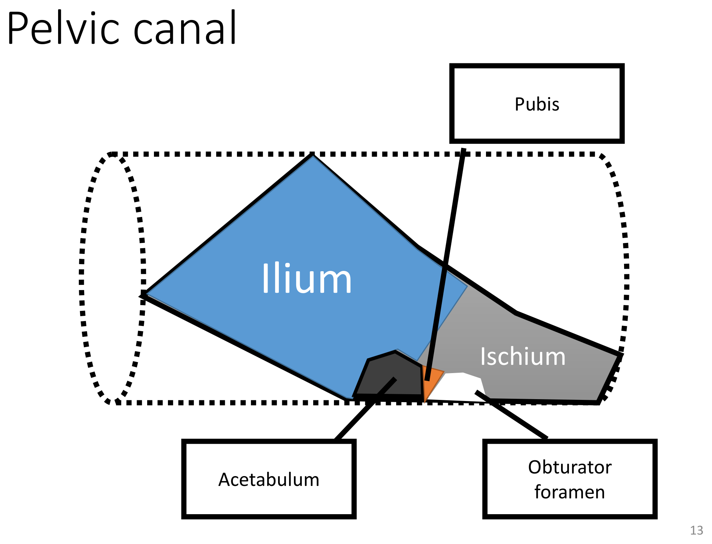

骨骼系統總論 Skeletal System Overview
本節整理骨骼分類與全身共通的「方位術語」「骨骼表面標記術語」——這是後面頭骨、脊柱、前後肢所有小節共用的語言，建議先熟讀本節，理解每個詞的定義後，後面各小節的內容會好記非常多。
骨骼的分類
四肢骨（肱骨、股骨等），負責承重與槓桿作用
腕骨、跗骨，吸收震動
肩胛骨、多數顱骨，保護內部器官／提供大面積肌肉附著
椎骨、骨盆骨，形狀複雜
另外還有籽骨（sesamoid bone）——包埋在肌腱內的骨頭，例如全身最大的籽骨是髕骨（patella）；以及含氣骨（pneumatic bone），例如額骨內含額竇。
解剖學方位術語（全身通用，務必先背熟）
| 術語 | 中文 | 意義 |
|---|---|---|
| Cranial | 顱側／前 | 朝向頭部方向（軀幹部位用語） |
| Caudal | 尾側／後 | 朝向尾巴方向（Cranial 的相反） |
| Rostral | 吻側 | 頭部專用，比 cranial 更精確地指向鼻尖方向 |
| Dorsal | 背側 | 朝向背部／上方 |
| Ventral | 腹側 | 朝向腹部／下方（Dorsal 的相反） |
| Medial | 內側 | 朝向身體正中線 |
| Lateral | 外側 | 遠離正中線（Medial 的相反） |
| Proximal | 近側 | 四肢用語，較靠近軀幹的一端 |
| Distal | 遠側 | 四肢用語，較遠離軀幹的一端（Proximal 的相反） |
| Palmar | 掌側 | 前肢腕關節以下，相當於腹側／尾側的面 |
| Plantar | 蹠側 | 後肢跗關節以下，相當於腹側／尾側的面 |
前肢腕關節（carpus）以下、後肢跗關節（tarsus）以下，因為四肢末端方向已經與軀幹垂直，改用 palmar／plantar（掌側／蹠側）取代 ventral，用 dorsal 取代 cranial，這在前後肢骨骼掌墊、動脈觸診等內容中會反覆出現。
骨骼表面標記術語（貫穿全身骨骼）
| 術語 | 中文 | 意義／舉例 |
|---|---|---|
| Process | 突起 | 泛稱骨骼上的突起，如 transverse process（橫突）、spinous process（棘突） |
| Tubercle | 結節 | 較小的圓形突起，如肱骨的 greater/lesser tubercle |
| Tuberosity | 粗隆 | 較大、表面粗糙的突起，通常是強力肌腱附著處，如 deltoid tuberosity、tibial tuberosity、ischiatic tuberosity |
| Trochanter | 轉子 | 僅見於股骨的大型突起：greater／lesser／third trochanter |
| Crest／Line | 嵴／線 | 狹長的骨脊或肌肉附著線，如 iliac crest（髂嵴）、tricipital line |
| Fossa | 窩 | 凹陷處，如 olecranon fossa、trochanteric fossa、acetabular fossa |
| Foramen | 孔 | 供血管、神經通過的孔洞，如 obturator foramen、vertebral foramen |
| Notch | 切跡 | 邊緣的凹陷缺口，如 greater ischiatic notch、trochlear notch |
| Fovea | 凹／小窩 | 小型（常為關節性）凹陷，如 atlas 的 articular fovea、radius 的 capitular fovea |
| Condyle | 髁 | 圓形的關節性突起，如股骨／脛骨／肱骨的 condyle |
| Epicondyle | 上髁 | 髁附近、非關節面的突起，供韌帶／肌肉附著，如肱骨、股骨的 medial／lateral epicondyle |
| Trochlea | 滑車 | 滑車狀關節面，如肱骨遠端 trochlea、股骨的 patellar trochlea、脛骨的 tibial cochlea |
把這兩張表先記熟，之後看到「greater trochanter」「intercondylar fossa」這種複合詞，就能直接拆解出「大＋轉子」「髁間＋窩」的意思，不需要死背每個詞彙。
頭骨 Skull
頭骨可分為包覆腦部的神經顱（neurocranium）與構成臉部、鼻腔、口腔的顏面顱（viscerocranium）兩大部分，本節以犬貓（小動物）頭骨為主整理各骨頭的重要構造。
頭骨分區
包覆並保護腦部的骨性腔室，由以下骨頭組成：
枕骨 Occipital、蝶骨 Sphenoid（basisphenoid＋presphenoid）、顳骨 Temporal（squamous＋petrous＋tympanic part）、額骨 Frontal、頂骨 Parietal、間頂骨 Interparietal、篩骨 Ethmoid
構成鼻腔、口腔、眼眶的骨性支架：
切齒骨 Incisive、上頜骨 Maxilla、鼻骨 Nasal、淚骨 Lacrimal、顴骨 Zygomatic、腭骨 Palatine、翼骨 Pterygoid、犁骨 Vomer、下頜骨 Mandible

神經顱重要構造
| 骨頭 | 重要構造 | 意義 |
|---|---|---|
| 枕骨 Occipital | 枕骨大孔 foramen magnum | 脊髓與延腦於此通過，連接顱腔與椎管 |
| 枕髁 occipital condyles | 與寰椎（C1）形成寰枕關節（atlanto-occipital joint） | |
| 項嵴 nuchal crest | 項部肌肉（如頭半棘肌）附著處 | |
| 顳骨 Temporal | 顴突 zygomatic process | 與顴骨共同形成顴弓（zygomatic arch） |
| 下頜窩 mandibular fossa | 與下頜骨髁突形成顳頜關節（TMJ） | |
| 鼓泡 tympanic bulla | 骨質膨大，包覆中耳腔 | |
| 岩部 petrous part | 包含內耳構造 | |
| 蝶骨 Sphenoid | 視神經管、眶裂、卵圓孔等多個孔洞 | 供視神經與多條顱神經通過 |
| 額骨 Frontal | 額竇 frontal sinus | 含氣空腔，減輕頭骨重量 |
| 篩骨 Ethmoid | 篩板 cribriform plate、篩鼻甲 ethmoturbinates | 嗅神經通過處／增加嗅覺上皮表面積 |
顏面顱重要構造
| 骨頭 | 重要構造／功能 |
|---|---|
| 切齒骨 Incisive bone | 容納上門齒（incisors） |
| 上頜骨 Maxilla | 容納上頜犬齒、前臼齒、臼齒；具眶下孔（infraorbital foramen，供神經血管通過，也是臨床牙科局部麻醉常用注射點） |
| 鼻骨 Nasal | 構成鼻腔背側頂 |
| 淚骨 Lacrimal | 眼眶內側壁，內含淚管 |
| 顴骨 Zygomatic | 與顳骨顴突共同構成顴弓，眼眶外側壁 |
| 腭骨 Palatine | 硬腭後段、鼻咽側壁 |
| 翼骨 Pterygoid | 鼻咽外側壁薄片狀骨 |
| 犁骨 Vomer | 構成鼻中隔一部分 |
| 下頜骨 Mandible | 下頜聯合（mandibular symphysis，犬貓為纖維軟骨連接、可略有活動）；下頜孔（mandibular foramen，下齒槽神經通過，拔牙局麻注射點）；喙突（coronoid process，顳肌附著）；髁突（condylar process，形成TMJ）；角突（angular process） |
舌骨器 Hyoid apparatus
由多節小骨串連而成，連接顳骨（tympanohyoid）與喉部／舌根，作為舌頭與喉頭的懸吊支架，臨床上是喉部／舌根手術的重要解剖標誌。
咀嚼肌 Muscles of Mastication
填滿顳窩（temporal fossa），起自顱骨側面止於下頜冠突，是主要的閉口肌之一。
起自顴弓，止於下頜骨外側面，強力閉口肌，觸診時可在顴弓下方摸到。
內／外翼肌，協助閉口與下頜側向研磨動作。
此外二腹肌（digastricus）是主要的開口肌，與上述閉口肌群作用相反。
犬貓與家畜頭骨差異：本節整理以犬貓（小動物）頭骨為主；牛、馬、豬等家畜頭骨在鼻竇範圍、額竇分隔、下頜聯合骨化程度、角突（os cornu，牛角的骨性核心）等構造上差異顯著，詳細內容須另行參照大動物解剖學課程。
臨床提醒：顴弓骨折、顳頜關節脫位是頭部外傷常見併發症；矢狀嵴（sagittal crest，顱骨背側正中線的骨脊，為顳肌起點）在觸診上是重要的品種／年齡辨識與定位標誌。
脊柱與胸廓 Vertebral Column & Thorax
脊柱分為五大區段，每一節椎骨都有共同的基本構造，但頸椎（尤其寰椎、樞椎）與胸椎、腰椎、薦椎各有特化。本節也一併整理與脊柱密切相關的肋骨與胸骨。
脊柱五大區段（犬）
| 區段 | 英文 | 犬的節數 | 備註 |
|---|---|---|---|
| 1. 頸椎 | Cervical | C1–C7（7節） | C1 寰椎、C2 樞椎高度特化 |
| 2. 胸椎 | Thoracic | T1–T13（13節） | 與肋骨相關節 |
| 3. 腰椎 | Lumbar | L1–L7（7節） | 橫突長且朝顱側 |
| 4. 薦椎 | Sacral | S1–S3（3節，融合成單一薦骨） | 與骨盆髂骨形成薦髂關節 |
| 5. 尾椎 | Caudal / Coccygeal | 約 Cd20–23（個體差異大） | 構造由近端向遠端逐漸簡化 |
C7 T13 L7 S3 Cd20–23
跨物種參考（一般獸醫解剖學常見數值，非本教材逐字內容，僅供比較記憶，實際數值依教科書略有差異）：
| 物種 | 脊柱公式（大致） |
|---|---|
| 犬 | C7 T13 L7 S3 Cd20–23 |
| 貓 | C7 T13 L7 S3 Cd20–23（與犬相近） |
| 馬 | C7 T18 L6 S5 Cd15–21 |
| 牛 | C7 T13 L6 S5 Cd18–20 |
| 豬 | C7 T14–15 L6–7 S4 Cd20–23 |
椎骨的共同構造
| 構造 | 說明 |
|---|---|
| 椎體 Body | 椎間盤（intervertebral disc）由中央的髓核（nucleus pulposus）與外圍的纖維環（annulus fibrosus）構成，連接相鄰椎體 |
| 椎弓 Arch | 由椎弓根（pedicle）與椎板（lamina）構成，圍出椎孔 |
| 椎孔 → 椎管 Vertebral foramen → canal | 連續排列形成椎管，容納脊髓 |
| 棘突 Spinous process | 背側正中突起，肌肉／韌帶附著 |
| 橫突 Transverse process | 兩側突起，肌肉附著，胸椎橫突與肋骨結節相關節 |
| 關節突 Articular process | 顱側與尾側各一對，與相鄰椎骨相關節，限制活動範圍 |
| 乳突 Mamillary process | 位於關節突背側，胸腰椎常見，肌肉附著 |
| 副突 Accessory process | 胸椎後段至腰椎前段（約至L5–L6）出現，肌肉附著 |
| 椎間孔 Intervertebral foramen | 相鄰椎骨間的孔洞，脊神經由此離開椎管 |

寰椎與樞椎（C1、C2）——特化頸椎
形態特殊，無明顯椎體與棘突。重要構造：翼（wing，即橫突）、翼切跡（alar notch）、橫突孔（transverse foramen）、外側椎孔（lateral vertebral foramen）、顱側關節凹（cranial articular foveae，與枕髁形成寰枕關節）、尾側關節凹（caudal articular foveae，與樞椎形成寰樞關節）。
最具特色的構造是齒突（dens），插入寰椎腹側，作為寰椎旋轉的軸心；另有高聳的棘突、顱側關節面、尾側椎切跡（caudal vertebral notch）、橫突、橫突孔。
寰樞關節不穩定（atlantoaxial instability）：常見於玩具／小型犬品種（如吉娃娃、玩具貴賓），因齒突發育異常或穩定韌帶鬆弛，可能造成脊髓壓迫，臨床表現為頸部疼痛甚至四肢輕癱；搬運與保定此類患畜頭頸部時需格外小心，避免過度屈曲頸部。
C3–C7：典型與非典型頸椎
- C3–C5：構造較典型，具棘突、橫突、關節突、橫突孔。
- C6：橫突特別寬大，在X光片上是辨認頸椎節數的重要地標。
- C7：缺乏橫突孔（transverse foramen 僅見於 C1–C6），且棘突是頸椎中最高的一節，常作為計數胸椎起點（T1）的參考地標。
胸椎 Thoracic vertebrae
- 棘突高聳且方向由尾側指向逐漸轉為顱側，於第11胸椎（T11）方向翻轉，此節稱為「anticlinal vertebra／臨界椎」，在X光判讀上是重要地標。
- 具乳突（mammillary process）與副突（accessory process，從中段胸椎延伸至腰椎前段）。
- 橫突末端有橫突肋凹（transverse fovea／costal fovea of transverse process），與肋骨結節相關節；椎體兩側則有顱側／尾側肋凹（cranial／caudal costal fovea），與肋骨頭相關節，共同組成肋椎關節（costovertebral joint）。
腰椎 Lumbar vertebrae
- 橫突細長且朝顱側方向延伸，是腰椎最明顯的特徵。
- 乳突位於關節突背側；副突同樣存在。
薦椎 Sacrum
由數節薦椎（犬3節）融合而成單一薦骨，重要構造：翼（wing）、背側薦孔（dorsal sacral foramina）、正中薦嵴（median sacral crest）、骨盆薦孔（pelvic sacral foramina）、耳狀面（auricular surface，與髂骨構成薦髂關節）、岬（promontory，薦骨前緣向椎管內突出處）、薦管（sacral canal）。
Sacrum 字源為拉丁文「神聖的骨頭」，古埃及傳說中與冥王歐西里斯（Osiris）的身體有關，古埃及人稱之為「Djed（節德柱）」——這是有趣的命名小知識，幫助記憶這個字。
尾椎 Caudal vertebrae
近端尾椎仍保有椎弓、棘突、橫突、關節突等基本構造，並可能具有血管弓（hemal arch）保護腹側尾動靜脈；越往遠端構造越簡化，最終僅剩簡單的圓柱狀椎體。
臨床操作定位地標
| 操作 | 解剖定位地標 |
|---|---|
| 腦脊髓液採集（cisternal puncture） | 枕骨與寰椎之間的寰枕間隙 |
| 腰椎穿刺／硬膜外麻醉（lumbar puncture／epidural） | 腰薦間隙（L7–S1），體表地標為兩側髂骨翼（iliac crest）連線與 L7 棘突 |
| 脊髓攝影術（myelography） | 常用 L5–L6 棘突間隙注射顯影劑 |
椎間盤突出症（IVDD, Intervertebral Disc Disease）：軟骨營養不良品種（如臘腸犬）好發，髓核鈣化後脫出壓迫脊髓；嚴重病例可行半椎板切除術（hemilaminectomy）減壓治療。
肋骨與胸廓 Ribs & Sternum
| 肋骨構造 | 說明 |
|---|---|
| 頭 Head | 與相鄰兩節椎體的肋凹相關節（跨越椎間盤） |
| 頸 Neck | 連接頭與體的細窄段 |
| 結節 Tubercle | 與胸椎橫突的肋凹相關節 |
| 體 Body | 主要骨幹 |
| 角 Angle | 肋骨彎曲轉折處 |
| 肋軟骨 Costal cartilage | 連接肋骨與胸骨 |
- R1–R9：真肋（true ribs），各自以獨立肋軟骨與胸骨相接。
- R8–R9：肋軟骨常匯合於第7胸骨節（sternebra）附近／劍狀軟骨處。
- R10–R12：肋軟骨互相融合，共同形成肋弓（costal arch）。
- R13：游離肋（floating rib），末端不與胸骨相連，游離於肌肉中。
胸骨（sternum）由8節胸骨節（sternebrae）組成：第1節為胸骨柄（manubrium），第8節為劍突（xiphoid process）並延續劍狀軟骨（xiphoid cartilage）；節與節之間以節間軟骨（intersternebral cartilage）連接。橫膈（diaphragm）附著於劍狀軟骨與 R8–R13 一帶的肋弓。
趣味補充：牛肉分切名稱其實對應到脊柱背側肌群——覆蓋胸腰椎背側的最長肌（longissimus）＋棘肌（spinalis）對應「沙朗／紐約客牛排」；位於腰椎腹側的腰大肌（psoas major）對應「菲力（tenderloin）」；若橫切帶有椎骨則是「丁骨／紅屋牛排」。這是記憶脊柱背側肌肉相對位置的有趣方式。
前肢骨骼 Thoracic Limb (Forelimb)
前肢由肩帶（scapula，鎖骨已退化）、上臂（humerus）、前臂（radius＋ulna）與前腳掌（carpal、metacarpal、phalanges）組成。
肩胛骨 Scapula
| 構造 | 說明 |
|---|---|
| 顱側角／尾側角 Cranial／Caudal angle | 肩胛骨背側兩端 |
| 背側緣 Dorsal border | 肩胛骨最上緣 |
| 顱側緣 Cranial border | 較薄 |
| 尾側緣 Caudal border | 較厚 |
| 棘 Spine | 將外側面分為棘上窩與棘下窩的骨脊 |
| 肩峰 Acromion | 棘的遠端終點，三角肌附著 |
| 盂上結節 Supraglenoid tubercle | 肱二頭肌起點 |
| 盂下結節 Infraglenoid tubercle | 關節盂下方小突起 |
| 棘上窩／棘下窩 Supraspinous／Infraspinous fossa | 分別容納棘上肌、棘下肌 |
| 肩胛下窩 Subscapular fossa | 內側面凹陷，容納肩胛下肌 |
| 喙突 Coracoid process | 關節盂內側小突起 |
| 關節盂 Glenoid cavity | 與肱骨頭相關節，形成肩關節 |
鎖骨（clavicle）在犬貓已高度退化，僅剩包埋在臂頭肌（brachiocephalicus）肌腱內的一小片骨化中心，X光下可見游離小骨影，並不構成真正的關節；肩胛骨與軀幹之間也沒有骨性連接，完全依賴肌肉（如前鋸肌、斜方肌）懸吊固定，這種「肌肉懸吊」結構讓四肢在承重、著地時具有避震效果。
肩帶周邊肌肉附著地標：肩峰→三角肌（deltoideus）；盂上結節→肱二頭肌（biceps brachii）；尾側緣→三頭肌長頭／大圓肌／小圓肌；棘→斜方肌／三角肌；背側緣→菱形肌（rhomboideus）。
肱骨 Humerus
| 構造 | 說明 |
|---|---|
| 頭／頸 Head／Neck | 與肩胛骨關節盂相關節 |
| 大結節／小結節 Greater／Lesser tubercle | 肩帶肌群附著 |
| 大結節嵴 Crest of greater tubercle | 胸肌群附著（淺胸肌、深胸肌） |
| 結節間溝 Intertubercular (bicipital) groove | 肱二頭肌腱通過的溝槽，位於大、小結節之間 |
| 三頭肌線 Tricipital line | 三頭肌外側頭附著 |
| 三角肌粗隆 Deltoid tuberosity | 三角肌止點 |
| 大圓肌粗隆（內側）／小圓肌粗隆（外側） | 對應肌肉止點 |
| 滑車 Trochlea（內側） | 與尺骨相關節 |
| 肱骨小頭 Capitulum（外側） | 與橈骨相關節 |
| 橈窩／鷹嘴窩 Radial fossa／Olecranon fossa | 分別容納伸肘、屈肘時橈骨頭／尺骨鷹嘴 |
| 滑車上孔 Supratrochlear foramen | 犬常見，貓通常缺如 |
| 內／外上髁 Medial／Lateral epicondyle | 前臂屈肌／伸肌群起點 |

橈骨與尺骨 Radius & Ulna
近端有橈骨頭凹（capitular fovea）與肱骨小頭相關節；遠端有莖突（styloid process）；具內側緣、外側緣，遠端背側有3條伸肌腱溝。橈骨是前臂主要承重骨。
鷹嘴（olecranon）含鷹嘴結節（olecranon tuber）與肘突（anconeal process）；半月切跡（trochlear notch）與肱骨滑車相關節；內側／外側冠狀突（coronoid process）；骨間緣（interosseous border）；遠端莖突（styloid process）；尺骨粗隆（ulnar tuberosity）。
肘關節發育不良（elbow dysplasia）相關病灶：內側冠狀突破裂（Fragmented Coronoid Process, FCP）與肘突未癒合（Ununited Anconeal Process, UAP），好發於大型速生品種幼犬，是前肢跛行的重要鑑別診斷。
腕骨、掌骨、指骨 Carpal, Metacarpal, Phalanges
- 腕骨（carpal bones）共7塊：近列（由內至外）——橈腕骨（intermedioradial，橈骨與中間骨融合而成）、尺腕骨（ulnar carpal）、副腕骨（accessory carpal）；遠列（由內至外）——腕骨 I、II、III、IV。
- 掌骨（metacarpal bones）：I（退化）至 V，各具底（base）、體（body）、頭（head）。
- 指骨（phalanges）：近節、中節、遠節（含爪突 ungual process、爪嵴 ungual crest、屈肌結節 flexor tubercle）；另有掌側籽骨（palmar／proximal sesamoid bones）與背側籽骨（dorsal sesamoid bones）協助穩定關節。第一指（digit I）常退化，成為懸爪（dewclaw）。
爪（claw）由遠節指骨（third／distal phalanx）的爪突包覆角質鞘構成，貓的爪可縮回、犬則不可縮回。斷爪手術（declaw, onychectomy）實際上是截去整個遠節指骨（P3），等同於截去人類手指的第一指節，涉及顯著動物福利爭議，臨床上應審慎評估。
臨床觸診地標：測量血壓時常於前掌墊上方觸診固定血壓帶（對應掌側總指動脈）；橈神經、尺神經、正中神經分別支配前肢不同區域的皮膚感覺，評估周邊神經損傷時需依區域分布判讀。
後肢骨骼 Pelvic Limb
後肢由骨盆（pelvis）、股骨（femur）、脛骨與腓骨（tibia＋fibula）、後腳掌（tarsal、metatarsal、phalanges）組成，與前肢相比多了骨盆帶與軀幹形成真正的骨性連接（薦髂關節）。
骨盆 Pelvis (Pelvic girdle)
骨盆＝左右兩塊髖骨（hip bone, os coxae），每塊髖骨由髂骨（ilium）＋坐骨（ischium）＋恥骨（pubis）（幼年期另有獨立的髖臼骨 acetabular bone）在髖臼處融合而成。骨盆腔（pelvic canal）具入口（inlet）與出口（outlet），其形狀與難產風險相關。
髂骨 Ilium
| 構造 | 說明 |
|---|---|
| 髂嵴 Iliac crest | 翼部背側緣 |
| 髂骨棘 Iliac spine | 顱背側棘＋尾背側棘（合稱薦結節 tuber sacrale）、顱腹側棘 |
| 臀肌面 Gluteal surface | 臀肌群附著的外側面 |
| 薦盆面 Sacropelvic surface | 內含耳狀面（auricular surface），與薦骨構成薦髂關節 |
| 外側緣 Lateral border／弓狀線 Arcuate line | 翼部邊界 |
| 大坐骨切跡 Greater ischiatic notch | 坐骨神經通過附近 |
坐骨 Ischium
坐骨板（ischiatic table）、坐骨結節（ischiatic tuberosity）、坐骨弓（ischiatic arch）、骨盆聯合（symphysis pelvis）、小坐骨切跡（lesser ischiatic notch）、坐骨棘（ischiatic spine）。
恥骨 Pubis
髂恥隆起（iliopubic eminence）、恥骨結節（pubic tubercle）、恥骨櫛（pecten）、與坐骨共同參與骨盆聯合。
髖臼與閉孔 Acetabulum & Obturator Foramen
髖臼（acetabulum）由髂骨、坐骨、恥骨三骨共同構成的關節窩，關節面呈半月形（lunate surface），中央非關節面凹陷為髖臼窩（acetabular fossa），邊緣缺口為髖臼切跡（acetabular notch）。閉孔（obturator foramen）由坐骨與恥骨圍成，供閉孔神經血管通過。
內閉孔肌（internal obturator）起自骨盆聯合、坐骨與恥骨背側面，止於股骨轉子窩；在會陰疝（perineal hernia）修補手術中，常將此肌轉位（elevated）用來補強骨盆膈膜（levator ani 肌肉缺損處）。

髖關節疾病
- 髖關節脫臼（hip luxation）：以顱背側脫位（craniodorsal displacement）最常見。
- 髖關節發育不良（hip dysplasia）：髖臼過淺（shallow socket）合併股骨頭變形；Ortolani test是理學檢查方法，將股骨頭推入／推出髖臼、觸診「跳動感（clunk）」來評估關節鬆弛度。
- 嚴重病例治療之一為股骨頭頸切除術（Femoral Head and Neck Ostectomy, FHO）；手術入路需經臀肌，並須注意保護走行於附近的坐骨神經。
股骨 Femur
| 構造 | 說明 |
|---|---|
| 頭／頸 Head／Neck | 與髖臼相關節 |
| 大轉子／小轉子／第三轉子 Greater／Lesser／Third trochanter | 臀肌群、髂腰肌等附著 |
| 轉子窩 Trochanteric fossa | 內閉孔肌等止點 |
| 轉子間嵴 Intertrochanteric crest | 連接大、小轉子 |
| 滑車（髕面）Trochlea (patellar surface) | 與髕骨相關節 |
| 內／外側髁 Medial／Lateral condyle | 與脛骨相關節，構成股脛關節 |
| 內／外上髁 Medial／Lateral epicondyle | 側副韌帶、腓腸肌附著 |
| 髁間窩 Intercondylar fossa | 十字韌帶附著處 |
| 籽骨 Sesamoid bones | 髕骨（patella，全身最大籽骨）；豆骨（fabella，位於腓腸肌內外側頭起點內） |
膝關節 Stifle Joint
脛骨（tibia）：內／外側髁、脛骨粗隆（tibial tuberosity，髕韌帶附著處）、顱側緣、髁間隆起（intercondylar eminence）、膕切跡（popliteal notch）、內踝（medial malleolus）、脛骨滑車（tibial cochlea，遠端與距骨相關節）。
半月板（menisci）：內側與外側各一片纖維軟骨墊，位於股骨與脛骨關節面之間。
十字韌帶：前十字韌帶（cranial cruciate ligament, CrCL）與後十字韌帶（caudal cruciate ligament, CaCL）分別附著於股骨髁間窩與脛骨髁間區，交叉穩定膝關節前後向移動。
前十字韌帶斷裂（CrCL rupture）是犬最常見的後肢跛行原因之一。理學檢查：前抽屜試驗（cranial drawer test）（觸診脛骨相對股骨的異常前移）、脛骨壓迫試驗（tibial compression test）。手術治療之一為外側豆骨—脛骨縫合術（lateral fabella-tibial suture），利用外側 fabella 作為錨點穩定關節。
髕骨脫臼（patellar luxation）：內側脫臼（medial luxation）好發於小型／玩具犬種；外側脫臼（lateral luxation）相對常見於大型犬種與貓。理學檢查以伸展膝關節同時將髕骨向內／外側推動觸診脫位感。手術矯正原則包含加深股骨滑車溝（trochlear recession）與脛骨粗隆轉位（tibial tuberosity transposition）。
腓骨 Fibula
細長、不負重（non-weight-bearing）的骨頭，位於脛骨外側；近端腓骨頭（head of fibula）僅與脛骨相關節、不與股骨相關節；遠端形成外踝（lateral malleolus）。
跗骨、蹠骨、趾骨 Tarsal, Metatarsal, Phalanges
- 跗骨（tarsal bones）共7塊：跟骨（calcaneus）——含跟結節（tuber calcanei，即飛節頂點）與載距突（sustentaculum tali）；距骨（talus）——具滑車與脛骨滑車相關節；中央跗骨（central tarsal bone）；跗骨 I–IV。
- 總跟腱（Achilles / common calcanean tendon）由腓腸肌、淺指屈肌與部分股二頭肌／半腱肌腱纖維共同構成，止於跟結節。
- 蹠骨（metatarsal bones）通常為 II–V（I 常缺如，若存在則多為後肢懸爪）；趾骨（phalanges）構造與前肢相同。
跟腱斷裂：患肢無法維持飛節於正常離地姿勢，站立／行走時呈現特徵性的「蹠行（plantigrade）」步態，即跗關節塌陷貼近地面。
學習重點整理
考試／臨床實務角度的整理，複習前可先快速掃過本節，找出自己不熟的部分再回對應章節細讀。
練習題 Practice Quiz
涵蓋總論、頭骨、脊柱、前肢、後肢各章節重點，先自己作答再點「顯示答案」核對，答錯的觀念請回對應章節重讀一次。
尾椎（caudal vertebrae）數量個體差異較大，一般以約20–23節表示，其餘頸、胸、腰、薦椎節數則相對固定。
寰椎形態特殊，並無明顯椎體與棘突；具有高聳棘突與齒突（dens）特徵的是樞椎（axis, C2）。
齒突（dens）插入寰椎腹側，作為寰椎旋轉的軸心，是樞椎最具代表性的構造；翼是寰椎的橫突。
胸椎棘突方向由尾側逐漸轉為顱側，於T11翻轉，此節稱為 anticlinal vertebra（臨界椎），是X光判讀計數椎骨節數的重要地標。
肩胛骨與軀幹之間並無骨性連接，完全依賴肌肉（如前鋸肌、斜方肌）懸吊固定，此結構在承重、著地時可提供避震效果。
犬貓鎖骨高度退化，僅剩包埋在臂頭肌肌腱內的小骨化中心，X光可見游離小骨影，但不構成真正的關節。
此構造為「結節間溝（intertubercular groove，又稱 bicipital groove）」，肱二頭肌（biceps brachii）的肌腱由此通過，是評估前肢跛行時（如二頭肌腱炎）常需觸診的解剖位置。
近列3塊（橈腕骨、尺腕骨、副腕骨）＋遠列4塊（腕骨I–IV），共7塊。
髕骨是全身最大的籽骨，包埋在股四頭肌腱（延續為髕韌帶）內，並與股骨滑車相關節。
前抽屜試驗與脛骨壓迫試驗是評估前十字韌帶斷裂的兩種標準理學檢查方法；Ortolani test 則是用於評估髖關節發育不良／鬆弛。
內側脫臼（medial luxation）好發於小型／玩具犬種；外側脫臼（lateral luxation）相對常見於大型犬種與貓。理學檢查方式是在伸展膝關節的同時，將髕骨分別向內側或外側推動，觸診是否有髕骨脫離股骨滑車溝的「跳出」感。
跟骨（calcaneus）、距骨（talus）、中央跗骨（central tarsal bone）、跗骨I–IV，共7塊，與腕骨數量相同。
總跟腱由腓腸肌、淺指屈肌等共同構成並止於跟結節，斷裂後患肢無法維持飛節正常離地姿勢，出現特徵性的蹠行步態。
體表定位標誌為兩側髂骨翼（iliac crest）連線的中點，配合觸診第7腰椎（L7）的棘突，其尾側即為腰薦間隙；此處空間相對寬大且脊髓終末端位置更靠顱側，操作風險較低。